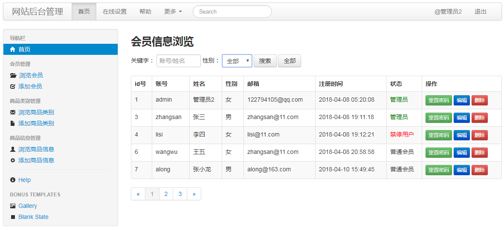
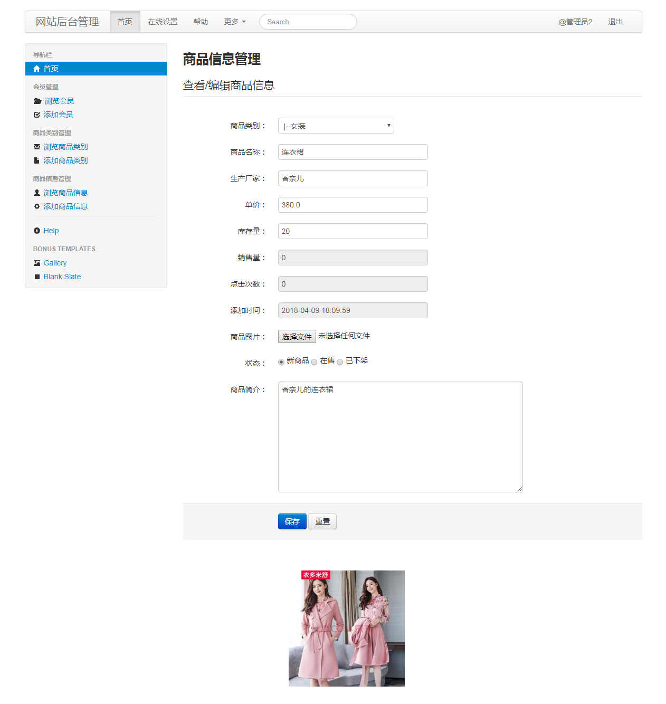

本周作业
一、 问题描述：
本周为Web项目开发实训课程，带大家使用Django框架完成了商城项目的后台管理开发。但是还有部分功能没有完成开发，作为闯关作业由学员完成，具体任务有：重置会员密码、为会员信息浏览添加搜索&分页效果、商品信息删除和商品信息修改。共计四个功能。具体显示效果如下：



二、 解题提示：
- 会员前台无法找回密码时，可以联系管理员，通过后台重置密码，故不需要源码，可直接强制修改任何会员的密码（由于密码使用MD5，故谁也看不到会员的原密码）。
- 分页我们上周案例中有参考，需要在这基础上添加搜索功能，难点是如何做到状态维持，具体可参考商品信息的搜索分页。
- 关于商品信息的删除和修改可参考上周的作业《在线相册》如何删除图片
三、 批改标准：
1) 会员管理中的重置密码（20分）
2) 搜索&分页浏览会员信息（25分）
3) 删除商品信息（20分）。
4) 修改商品信息（25分）
5) 其他项：(10分)（文件结构清晰，代码整洁，要求适量的注释）。
6) 扩展功能：(10分) 为商品信息管理添加Ueditor富文本编辑器